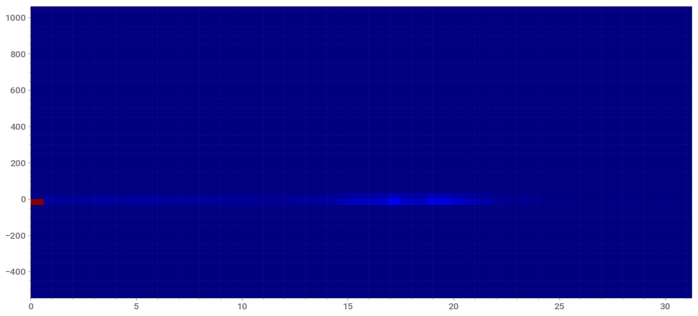
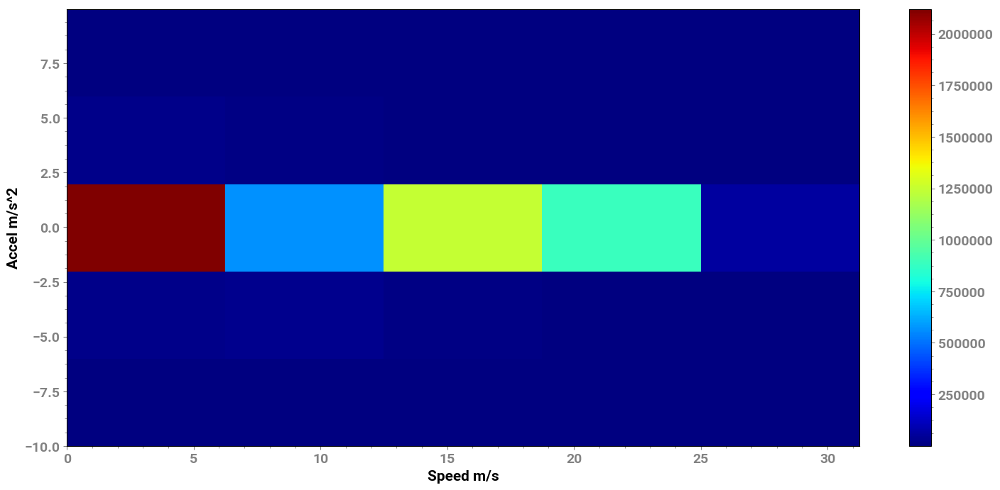
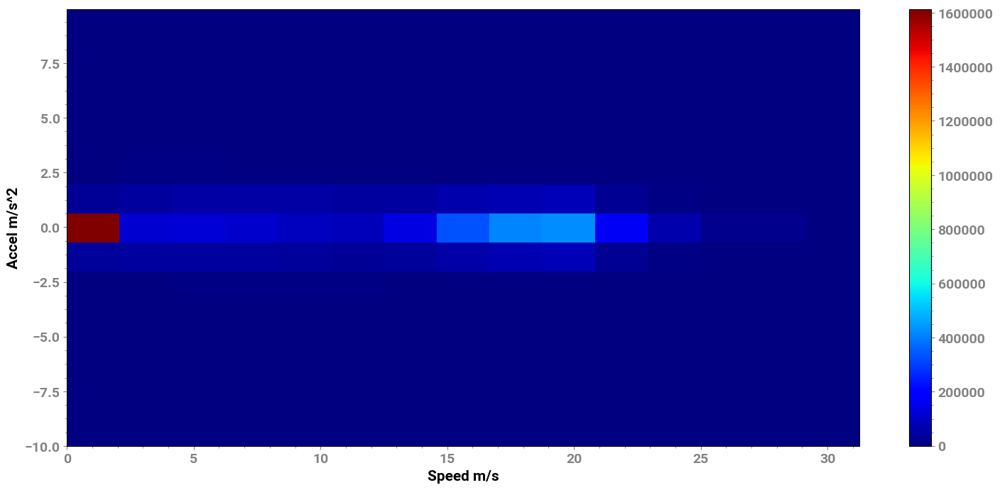
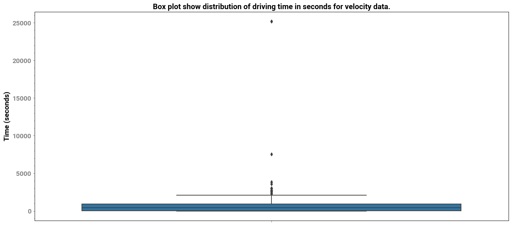

Aggregating Velocity and Acceleration Data¶
Aggregating Velocity and Acceleration Data from a Collection of Drive
[1]:
import strym
from strym import strymread
import matplotlib.pyplot as plt
import numpy as np
import glob
import pandas as pd
/home/ivory/anaconda3/envs/dbn/lib/python3.7/site-packages/statsmodels/tools/_testing.py:19: FutureWarning: pandas.util.testing is deprecated. Use the functions in the public API at pandas.testing instead.
import pandas.util.testing as tm
We are only going to collect Toyota RAV4 drives hence, ignore all Honda Pilot drives¶
[2]:
parentfolder = "../../PandaData/"
dbcfile = '../examples/newToyotacode.dbc'
csvlist = []
folderlist = glob.glob(parentfolder+"*")
speedlist = []
for datafolder in folderlist:
csvlisttmp = glob.glob(datafolder+"/*.csv")
for f in csvlisttmp:
if "CAN" not in f:
continue
if "5FNYF6H05HB089022" in f:
continue
csvlist.append(f)
[3]:
speed_list = []
accelx_list = []
for csv in csvlist:
print("\nReading the CSV file {}".format(csv))m.
r = strymread(csvfile=csv, dbcfile=dbcfile)
if r.success is True:
if r.burst is True:
print("Burst Data. Skipping ....")
continue
speed = r.speed()
if speed.shape[0] == 0:
continue
accelx = r.accelx()
if accelx.shape[0] == 0:
continue
speed_list.append(speed)
accelx_list.append(accelx)
Reading the CSV file /home/ivory/CyverseData/JmscslgroupData/PandaData/2020_02_13/2020-02-13-08-29-09-380270__CAN_Message.csv
Reading the CSV file /home/ivory/CyverseData/JmscslgroupData/PandaData/2020_02_13/2020-02-13-15-37-19-262923__CAN_Message.csv
Reading the CSV file /home/ivory/CyverseData/JmscslgroupData/PandaData/2020_03_15/2020-03-15-17-32-00_CAN_Messages.csv
Reading the CSV file /home/ivory/CyverseData/JmscslgroupData/PandaData/2020_03_15/2020-03-15-15-12-00_CAN_Messages.csv
Reading the CSV file /home/ivory/CyverseData/JmscslgroupData/PandaData/2019_11_08/2019-11-08-09-58-45-252022__CAN_Message_Toyotaa_CHR.csv
Burst Data. Skipping ....
Reading the CSV file /home/ivory/CyverseData/JmscslgroupData/PandaData/2019_11_08/2019-11-08-10-01-55-076615__CAN_Message_Toyotaa_CHR.csv
Burst Data. Skipping ....
Reading the CSV file /home/ivory/CyverseData/JmscslgroupData/PandaData/2019_11_08/2019-11-08-10-00-18-782963__CAN_Message_Toyotaa_CHR.csv
warning: dataframe empty. no message in dataframe.
Reading the CSV file /home/ivory/CyverseData/JmscslgroupData/PandaData/2019_11_08/2019-11-08-10-04-43-800750__CAN_Message_Toyota_CHR.csv
Burst Data. Skipping ....
Reading the CSV file /home/ivory/CyverseData/JmscslgroupData/PandaData/2019_11_08/2019-11-08-10-10-00-818245__CAN_Message_Toyota_CHR.csv
Burst Data. Skipping ....
Reading the CSV file /home/ivory/CyverseData/JmscslgroupData/PandaData/2019_11_08/2019-11-08-10-03-36-356992__CAN_Message_Toyota_CHR.csv
warning: dataframe empty. no message in dataframe.
Reading the CSV file /home/ivory/CyverseData/JmscslgroupData/PandaData/2019_11_08/2019-11-08-10-08-04-692087__CAN_Message_Toyota_CHR.csv
warning: dataframe empty. no message in dataframe.
Reading the CSV file /home/ivory/CyverseData/JmscslgroupData/PandaData/2019_11_08/2019-11-08-10-03-10-026068__CAN_Message_Toyota_CHR.csv
warning: dataframe empty. no message in dataframe.
Reading the CSV file /home/ivory/CyverseData/JmscslgroupData/PandaData/2019_11_08/2019-11-08-10-00-57-837332__CAN_Message_Toyotaa_CHR.csv
Burst Data. Skipping ....
Reading the CSV file /home/ivory/CyverseData/JmscslgroupData/PandaData/2020_04_05/2020-04-05-13-28-30_CAN_Messages.csv
Reading the CSV file /home/ivory/CyverseData/JmscslgroupData/PandaData/2020_04_05/2020-04-05-15-05-08_CAN_Messages.csv
No data was present in the csvfile or pandas dataframe supplied is empty. Unable to perform further operation
Reading the CSV file /home/ivory/CyverseData/JmscslgroupData/PandaData/2020_04_30/2020-04-30-16-19-07_2T3Y1RFV8KC014025_CAN_Messages.csv
Reading the CSV file /home/ivory/CyverseData/JmscslgroupData/PandaData/2020_04_30/2020-04-30-15-09-18_2T3Y1RFV8KC014025_CAN_Messages.csv
Reading the CSV file /home/ivory/CyverseData/JmscslgroupData/PandaData/2020_04_30/2020-04-30-16-06-00_2T3Y1RFV8KC014025_CAN_Messages.csv
Reading the CSV file /home/ivory/CyverseData/JmscslgroupData/PandaData/2020_04_30/2020-04-30-15-54-48_2T3Y1RFV8KC014025_CAN_Messages.csv
Reading the CSV file /home/ivory/CyverseData/JmscslgroupData/PandaData/2020_03_11/2020-03-11-15-20-00_CAN_Messages.csv
Reading the CSV file /home/ivory/CyverseData/JmscslgroupData/PandaData/2020_03_11/2020-03-11-16-43-24_CAN_Messages.csv
Reading the CSV file /home/ivory/CyverseData/JmscslgroupData/PandaData/2020_03_11/2020-03-11-11-24-24_CAN_Messages.csv
Reading the CSV file /home/ivory/CyverseData/JmscslgroupData/PandaData/2020_03_11/2020-03-11-12-03-30_CAN_Messages.csv
Reading the CSV file /home/ivory/CyverseData/JmscslgroupData/PandaData/2020_03_11/2020-03-11-10-18-08_CAN_Messages.csv
Reading the CSV file /home/ivory/CyverseData/JmscslgroupData/PandaData/2020_04_02/2020-04-02-09-58-48_CAN_Messages.csv
Reading the CSV file /home/ivory/CyverseData/JmscslgroupData/PandaData/2020_04_02/2020-04-02-09-33-00_CAN_Messages.csv
Reading the CSV file /home/ivory/CyverseData/JmscslgroupData/PandaData/2020_04_02/2020-04-02-09-39-40_CAN_Messages.csv
Reading the CSV file /home/ivory/CyverseData/JmscslgroupData/PandaData/2020_04_01/2020-04-01-09-49-30_CAN_Messages.csv
Reading the CSV file /home/ivory/CyverseData/JmscslgroupData/PandaData/2020_04_01/2020-04-01-10-30-53_CAN_Messages.csv
Reading the CSV file /home/ivory/CyverseData/JmscslgroupData/PandaData/2019_10_25/2019-10-25-13-40-15-264940_6288591b-a3ef-4030-a9db-5c3390d78282_CAN_Message_Rav4.csv
Burst Data. Skipping ....
Reading the CSV file /home/ivory/CyverseData/JmscslgroupData/PandaData/2019_10_25/2019-10-25-12-46-30-126677_8f806f3c-159e-4096-8552-b0aa7a0a681d_CAN_Message_Rav4.csv
Burst Data. Skipping ....
Reading the CSV file /home/ivory/CyverseData/JmscslgroupData/PandaData/2019_10_25/2019-10-25-13-53-22-402926_60e4cdc8-cf3f-4176-ad1b-2a13d00486f2_CAN_Message_Rav4.csv
Burst Data. Skipping ....
Reading the CSV file /home/ivory/CyverseData/JmscslgroupData/PandaData/2019_10_25/2019-10-25-13-51-36-833648_a4f27f0c-36b0-4abe-beed-3d548605c439_CAN_Message_Rav4.csv
Burst Data. Skipping ....
Reading the CSV file /home/ivory/CyverseData/JmscslgroupData/PandaData/2019_10_25/2019-10-25-13-57-42-883600_47016aab-73b8-470f-8c10-3e14aa85b582_CAN_Message_Rav4.csv
Burst Data. Skipping ....
Reading the CSV file /home/ivory/CyverseData/JmscslgroupData/PandaData/2019_10_25/2019-10-25-13-57-22-031456_b118f877-5385-4205-894a-a37515307ee1_CAN_Message_Rav4.csv
Burst Data. Skipping ....
Reading the CSV file /home/ivory/CyverseData/JmscslgroupData/PandaData/2019_10_25/2019-10-25-13-39-54-897963_4acda047-6dee-4398-907b-3a40c3468e05_CAN_Message_Rav4.csv
Burst Data. Skipping ....
Reading the CSV file /home/ivory/CyverseData/JmscslgroupData/PandaData/2019_10_25/2019-10-25-12-31-39-279380_f451a383-56f8-4792-8756-e8be378580d7_CAN_Message_Rav4.csv
Burst Data. Skipping ....
Reading the CSV file /home/ivory/CyverseData/JmscslgroupData/PandaData/2019_10_25/2019-10-25-13-59-00-271381_d0b9318a-f61d-4852-9aee-06f419d01727_CAN_Message_Rav4.csv
Burst Data. Skipping ....
Reading the CSV file /home/ivory/CyverseData/JmscslgroupData/PandaData/2019_10_25/2019-10-25-13-49-54-310111_cb40aa45-de04-4313-bb9b-1bcf10ebaf70_CAN_Message_Rav4.csv
Burst Data. Skipping ....
Reading the CSV file /home/ivory/CyverseData/JmscslgroupData/PandaData/2020-03-02/2020-03-02-12-54-30-482889__CAN_Messages.csv
Reading the CSV file /home/ivory/CyverseData/JmscslgroupData/PandaData/2020_03_03/2020-03-03-15-36-24-479038__CAN_Messages.csv
Reading the CSV file /home/ivory/CyverseData/JmscslgroupData/PandaData/2020_03_03/2020-03-03-18-29-15-641040__CAN_Messages.csv
Reading the CSV file /home/ivory/CyverseData/JmscslgroupData/PandaData/2020_03_03/2020-03-03-18-09-36-362663__CAN_Messages.csv
Reading the CSV file /home/ivory/CyverseData/JmscslgroupData/PandaData/2020_03_03/2020-03-03-15-27-20-702814__CAN_Messages.csv
Reading the CSV file /home/ivory/CyverseData/JmscslgroupData/PandaData/2020_03_03/2020-03-03-19-57-11-286348__CAN_Messages.csv
Reading the CSV file /home/ivory/CyverseData/JmscslgroupData/PandaData/2020_03_03/2020-03-03-19-32-39-704415__CAN_Messages.csv
Reading the CSV file /home/ivory/CyverseData/JmscslgroupData/PandaData/2020_03_03/2020-03-03-10-35-13-966077__CAN_Messages.csv
Reading the CSV file /home/ivory/CyverseData/JmscslgroupData/PandaData/2020_03_03/2020-03-03-20-15-01-595829__CAN_Messages.csv
Reading the CSV file /home/ivory/CyverseData/JmscslgroupData/PandaData/2020_04_27/2020-04-27-16-43-18_2T3Y1RFV8KC014025_CAN_Messages.csv
Reading the CSV file /home/ivory/CyverseData/JmscslgroupData/PandaData/2020_04_27/2020-04-27-14-39-48_2T3Y1RFV8KC014025_CAN_Messages.csv
Reading the CSV file /home/ivory/CyverseData/JmscslgroupData/PandaData/2020_04_27/2020-04-27-17-18-24_2T3Y1RFV8KC014025_CAN_Messages.csv
Reading the CSV file /home/ivory/CyverseData/JmscslgroupData/PandaData/2020_04_27/2020-04-27-16-06-00_2T3Y1RFV8KC014025_CAN_Messages.csv
Reading the CSV file /home/ivory/CyverseData/JmscslgroupData/PandaData/2020_04_27/2020-04-27-15-08-04_2T3Y1RFV8KC014025_CAN_Messages.csv
Reading the CSV file /home/ivory/CyverseData/JmscslgroupData/PandaData/2020_03_26/2020-03-26-11-31-18_CAN_Messages.csv
Reading the CSV file /home/ivory/CyverseData/JmscslgroupData/PandaData/2020_03_26/2020-03-26-10-03-10_CAN_Messages.csv
Reading the CSV file /home/ivory/CyverseData/JmscslgroupData/PandaData/2020_03_26/2020-03-26-10-53-30_CAN_Messages.csv
Reading the CSV file /home/ivory/CyverseData/JmscslgroupData/PandaData/2020_03_26/2020-03-26-11-57-54_CAN_Messages.csv
Reading the CSV file /home/ivory/CyverseData/JmscslgroupData/PandaData/2020_03_26/2020-03-26-12-20-31_CAN_Messages.csv
Reading the CSV file /home/ivory/CyverseData/JmscslgroupData/PandaData/2020_03_26/2020-03-26-11-43-41_CAN_Messages.csv
Reading the CSV file /home/ivory/CyverseData/JmscslgroupData/PandaData/2020_03_10/2020-03-10-11-04-13_CAN_Messages.csv
Reading the CSV file /home/ivory/CyverseData/JmscslgroupData/PandaData/2020_03_10/2020-03-10-09-27-18_CAN_Messages.csv
Reading the CSV file /home/ivory/CyverseData/JmscslgroupData/PandaData/2020_03_10/2020-03-10-08-14-04_CAN_Messages.csv
Reading the CSV file /home/ivory/CyverseData/JmscslgroupData/PandaData/2020_03_10/2020-03-10-10-57-06_CAN_Messages.csv
No data was present in the csvfile or pandas dataframe supplied is empty. Unable to perform further operation
Reading the CSV file /home/ivory/CyverseData/JmscslgroupData/PandaData/2020_03_12/2020-03-12-16-36-00_CAN_Messages.csv
Reading the CSV file /home/ivory/CyverseData/JmscslgroupData/PandaData/2020_03_12/2020-03-12-10-34-00_CAN_Messages.csv
No data was present in the csvfile or pandas dataframe supplied is empty. Unable to perform further operation
Reading the CSV file /home/ivory/CyverseData/JmscslgroupData/PandaData/2020_03_12/2020-03-12-16-42-37_CAN_Messages.csv
Reading the CSV file /home/ivory/CyverseData/JmscslgroupData/PandaData/2020_03_12/2020-03-12-10-56-10_CAN_Messages.csv
Reading the CSV file /home/ivory/CyverseData/JmscslgroupData/PandaData/2020_03_12/2020-03-12-16-42-33_CAN_Messages.csv
Reading the CSV file /home/ivory/CyverseData/JmscslgroupData/PandaData/2020_03_12/2020-03-12-17-01-23_CAN_Messages.csv
Reading the CSV file /home/ivory/CyverseData/JmscslgroupData/PandaData/2020_03_12/2020-03-12-16-55-30_CAN_Messages.csv
Reading the CSV file /home/ivory/CyverseData/JmscslgroupData/PandaData/2020_03_12/2020-03-12-17-00-38_CAN_Messages.csv
Reading the CSV file /home/ivory/CyverseData/JmscslgroupData/PandaData/2020_03_12/2020-03-12-09-08-48_CAN_Messages.csv
Reading the CSV file /home/ivory/CyverseData/JmscslgroupData/PandaData/2020_03_13/2020-03-13-11-40-54_CAN_Messages.csv
Reading the CSV file /home/ivory/CyverseData/JmscslgroupData/PandaData/2020_03_13/2020-03-13-06-38-00_CAN_Messages.csv
Reading the CSV file /home/ivory/CyverseData/JmscslgroupData/PandaData/2020_03_13/2020-03-13-06-53-08_CAN_Messages.csv
Reading the CSV file /home/ivory/CyverseData/JmscslgroupData/PandaData/2020_03_13/2020-03-13-11-19-00_CAN_Messages.csv
Reading the CSV file /home/ivory/CyverseData/JmscslgroupData/PandaData/2020_03_19/2020-03-19-09-14-39_CAN_Messages.csv
Reading the CSV file /home/ivory/CyverseData/JmscslgroupData/PandaData/2020_03_19/2020-03-19-11-37-30_CAN_Messages.csv
Reading the CSV file /home/ivory/CyverseData/JmscslgroupData/PandaData/2020_03_19/2020-03-19-12-27-00_CAN_Messages.csv
Reading the CSV file /home/ivory/CyverseData/JmscslgroupData/PandaData/2020_03_19/2020-03-19-12-45-44_CAN_Messages.csv
Reading the CSV file /home/ivory/CyverseData/JmscslgroupData/PandaData/2020_03_19/2020-03-19-11-53-54_CAN_Messages.csv
Reading the CSV file /home/ivory/CyverseData/JmscslgroupData/PandaData/2020_03_19/2020-03-19-10-50-13_CAN_Messages.csv
Reading the CSV file /home/ivory/CyverseData/JmscslgroupData/PandaData/2020_02_18/2020-02-18-13-00-42-209119__CAN_Messages.csv
Reading the CSV file /home/ivory/CyverseData/JmscslgroupData/PandaData/2020_02_18/2018-01-28-09-02-10-467810__CAN_Messages.csv
warning: dataframe empty. no message in dataframe.
Reading the CSV file /home/ivory/CyverseData/JmscslgroupData/PandaData/2020_02_18/2020-02-18-12-32-50-441417__CAN_Messages.csv
warning: dataframe empty. no message in dataframe.
Reading the CSV file /home/ivory/CyverseData/JmscslgroupData/PandaData/2020_02_18/2020-02-18-12-31-06-143745__CAN_Messages.csv
warning: dataframe empty. no message in dataframe.
Reading the CSV file /home/ivory/CyverseData/JmscslgroupData/PandaData/2020_02_18/2020-02-18-12-39-34-167060__CAN_Messages.csv
warning: dataframe empty. no message in dataframe.
Reading the CSV file /home/ivory/CyverseData/JmscslgroupData/PandaData/2020_02_18/2020-02-18-12-49-46-552710__CAN_Messages.csv
warning: dataframe empty. no message in dataframe.
Reading the CSV file /home/ivory/CyverseData/JmscslgroupData/PandaData/2020_02_18/2020-02-18-12-22-36-391463__CAN_Messages.csv
warning: dataframe empty. no message in dataframe.
Reading the CSV file /home/ivory/CyverseData/JmscslgroupData/PandaData/2020_03_22/2020-03-22-11-20-54_CAN_Messages.csv
Reading the CSV file /home/ivory/CyverseData/JmscslgroupData/PandaData/2020_03_22/2020-03-22-08-48-30_CAN_Messages.csv
Reading the CSV file /home/ivory/CyverseData/JmscslgroupData/PandaData/2020_03_31/2020-03-31-09-54-18_CAN_Messages.csv
Reading the CSV file /home/ivory/CyverseData/JmscslgroupData/PandaData/2020_03_31/2020-03-31-13-32-54_CAN_Messages.csv
Reading the CSV file /home/ivory/CyverseData/JmscslgroupData/PandaData/2020_03_09/2020-03-09-15-36-19_CAN_Messages.csv
Reading the CSV file /home/ivory/CyverseData/JmscslgroupData/PandaData/2020_03_09/2020-03-09-18-18-29_CAN_Messages.csv
Reading the CSV file /home/ivory/CyverseData/JmscslgroupData/PandaData/2020_03_09/2020-03-09-19-21-04_CAN_Messages.csv
Reading the CSV file /home/ivory/CyverseData/JmscslgroupData/PandaData/2020_03_09/2020-03-09-17-31-45_CAN_Messages.csv
Reading the CSV file /home/ivory/CyverseData/JmscslgroupData/PandaData/2020_05_01/2020-05-01-11-46-18_2T3Y1RFV8KC014025_CAN_Messages.csv
Reading the CSV file /home/ivory/CyverseData/JmscslgroupData/PandaData/2020_05_01/2020-05-01-12-26-25_2T3Y1RFV8KC014025_CAN_Messages.csv
Reading the CSV file /home/ivory/CyverseData/JmscslgroupData/PandaData/2020_05_11/2020-05-11-22-49-54_2T3Y1RFV8KC014025_CAN_Messages.csv
Reading the CSV file /home/ivory/CyverseData/JmscslgroupData/PandaData/2020_03_29/2020-03-29-08-44-46_CAN_Messages.csv
Reading the CSV file /home/ivory/CyverseData/JmscslgroupData/PandaData/2020_03_29/2020-03-29-12-02-12_CAN_Messages.csv
Reading the CSV file /home/ivory/CyverseData/JmscslgroupData/PandaData/2020_05_12/2020-05-12-21-32-13_2T3Y1RFV8KC014025_CAN_Messages.csv
Reading the CSV file /home/ivory/CyverseData/JmscslgroupData/PandaData/2020_05_12/2020-05-12-20-25-00_2T3Y1RFV8KC014025_CAN_Messages.csv
Reading the CSV file /home/ivory/CyverseData/JmscslgroupData/PandaData/2020_05_12/2020-05-12-22-23-19_2T3Y1RFV8KC014025_CAN_Messages.csv
Reading the CSV file /home/ivory/CyverseData/JmscslgroupData/PandaData/2020_05_12/2020-05-12-21-04-29_2T3Y1RFV8KC014025_CAN_Messages.csv
Reading the CSV file /home/ivory/CyverseData/JmscslgroupData/PandaData/2020_05_12/2020-05-12-23-33-50_2T3Y1RFV8KC014025_CAN_Messages.csv
Reading the CSV file /home/ivory/CyverseData/JmscslgroupData/PandaData/2020_05_12/2020-05-12-23-39-03_2T3Y1RFV8KC014025_CAN_Messages.csv
Reading the CSV file /home/ivory/CyverseData/JmscslgroupData/PandaData/2020_02_06/2020-02-06-16-36-00-227861__CAN_Message.csv
Reading the CSV file /home/ivory/CyverseData/JmscslgroupData/PandaData/2020_02_06/2020-02-06-16-34-13-171421__CAN_Message.csv
Reading the CSV file /home/ivory/CyverseData/JmscslgroupData/PandaData/2020_02_06/2020-02-06-16-40-03-096070__CAN_Message.csv
Reading the CSV file /home/ivory/CyverseData/JmscslgroupData/PandaData/2020_02_06/2020-02-06-16-46-57-040944__CAN_Message.csv
Reading the CSV file /home/ivory/CyverseData/JmscslgroupData/PandaData/2020_02_06/2020-02-06-16-34-49-331226__CAN_Message.csv
warning: dataframe empty. no message in dataframe.
Reading the CSV file /home/ivory/CyverseData/JmscslgroupData/PandaData/2020_02_06/2020-02-06-16-35-34-628413__CAN_Message.csv
Reading the CSV file /home/ivory/CyverseData/JmscslgroupData/PandaData/2020_02_27/2020-02-27-16-22-31-700666__CAN_Messages.csv
Reading the CSV file /home/ivory/CyverseData/JmscslgroupData/PandaData/2020_02_27/2020-02-27-16-16-04-935080__CAN_Messages.csv
Reading the CSV file /home/ivory/CyverseData/JmscslgroupData/PandaData/2020_02_27/2020-02-27-15-38-26-238467__CAN_Messages.csv
Reading the CSV file /home/ivory/CyverseData/JmscslgroupData/PandaData/2020_01_31/2020-01-31-13-32-59-900537__CAN_Message_.csv
Reading the CSV file /home/ivory/CyverseData/JmscslgroupData/PandaData/2020_01_31/2020-01-31-11-52-22-509405__CAN_Message_.csv
Burst Data. Skipping ....
Reading the CSV file /home/ivory/CyverseData/JmscslgroupData/PandaData/2020_01_31/2020-01-31-13-38-24-204512__CAN_Message_.csv
warning: dataframe empty. no message in dataframe.
Reading the CSV file /home/ivory/CyverseData/JmscslgroupData/PandaData/2020_01_31/2020-01-31-11-58-46-177685__CAN_Message_.csv
Burst Data. Skipping ....
Reading the CSV file /home/ivory/CyverseData/JmscslgroupData/PandaData/2020_01_31/2020-01-31-13-54-28-723426__CAN_Message_Rav4.csv
Reading the CSV file /home/ivory/CyverseData/JmscslgroupData/PandaData/2020_01_31/2020-01-31-14-00-25-339099__CAN_Message_.csv
Reading the CSV file /home/ivory/CyverseData/JmscslgroupData/PandaData/2020_01_31/2020-01-31-15-08-00-650813__CAN_Message_.csv
Burst Data. Skipping ....
Reading the CSV file /home/ivory/CyverseData/JmscslgroupData/PandaData/2020_01_31/2020-01-31-14-38-02-581340__CAN_Message_.csv
Burst Data. Skipping ....
Reading the CSV file /home/ivory/CyverseData/JmscslgroupData/PandaData/2020_01_31/2020-01-31-15-08-26-922128__CAN_Message_.csv
Burst Data. Skipping ....
Reading the CSV file /home/ivory/CyverseData/JmscslgroupData/PandaData/2020_01_31/2020-01-31-14-06-00-695237__CAN_Message_.csv
warning: dataframe empty. no message in dataframe.
Reading the CSV file /home/ivory/CyverseData/JmscslgroupData/PandaData/2020_01_31/2020-01-31-14-02-01-566381__CAN_Message_.csv
Reading the CSV file /home/ivory/CyverseData/JmscslgroupData/PandaData/2020_01_31/2020-01-31-14-34-06-311481__CAN_Message_.csv
warning: dataframe empty. no message in dataframe.
Reading the CSV file /home/ivory/CyverseData/JmscslgroupData/PandaData/2020_01_31/2020-01-31-15-07-24-255626__CAN_Message_.csv
Burst Data. Skipping ....
Reading the CSV file /home/ivory/CyverseData/JmscslgroupData/PandaData/2020_01_31/2020-01-31-11-03-22-149961__CAN_Message_Rav4.csv
Burst Data. Skipping ....
Reading the CSV file /home/ivory/CyverseData/JmscslgroupData/PandaData/2020_01_31/2020-01-31-11-43-56-582912__CAN_Message_.csv
Burst Data. Skipping ....
Reading the CSV file /home/ivory/CyverseData/JmscslgroupData/PandaData/2020_01_31/2020-01-31-13-35-42-866482__CAN_Message_.csv
Reading the CSV file /home/ivory/CyverseData/JmscslgroupData/PandaData/2020_01_31/2020-01-31-11-51-12-903245__CAN_Message_.csv
Burst Data. Skipping ....
Reading the CSV file /home/ivory/CyverseData/JmscslgroupData/PandaData/2020_01_31/2020-01-31-13-54-13-514632__CAN_Message_Rav4.csv
No data was present in the csvfile or pandas dataframe supplied is empty. Unable to perform further operation
Reading the CSV file /home/ivory/CyverseData/JmscslgroupData/PandaData/2020_01_31/2020-01-31-13-33-32-930226__CAN_Message_.csv
Reading the CSV file /home/ivory/CyverseData/JmscslgroupData/PandaData/2020_01_31/2020-01-31-11-51-43-199958__CAN_Message_.csv
Burst Data. Skipping ....
Reading the CSV file /home/ivory/CyverseData/JmscslgroupData/PandaData/2020_01_31/2020-01-31-13-04-39-616820__CAN_Message_.csv
No data was present in the csvfile or pandas dataframe supplied is empty. Unable to perform further operation
Reading the CSV file /home/ivory/CyverseData/JmscslgroupData/PandaData/2020_01_31/2020-01-31-13-35-04-231775__CAN_Message_.csv
Reading the CSV file /home/ivory/CyverseData/JmscslgroupData/PandaData/2020_01_31/2020-01-31-14-34-19-260236__CAN_Message_.csv
Reading the CSV file /home/ivory/CyverseData/JmscslgroupData/PandaData/2020_01_31/2020-01-31-13-32-21-095826__CAN_Message_.csv
Reading the CSV file /home/ivory/CyverseData/JmscslgroupData/PandaData/2020_01_31/2020-01-31-13-58-22-151756__CAN_Message_.csv
Burst Data. Skipping ....
Reading the CSV file /home/ivory/CyverseData/JmscslgroupData/PandaData/2020_01_31/2020-01-31-13-35-25-352395__CAN_Message_.csv
Reading the CSV file /home/ivory/CyverseData/JmscslgroupData/PandaData/2020_03_16/2020-03-16-15-29-20_CAN_Messages.csv
Reading the CSV file /home/ivory/CyverseData/JmscslgroupData/PandaData/2020_04_03/2020-04-03-16-56-30_CAN_Messages.csv
Reading the CSV file /home/ivory/CyverseData/JmscslgroupData/PandaData/2020_04_03/2020-04-03-17-04-00_CAN_Messages.csv
Reading the CSV file /home/ivory/CyverseData/JmscslgroupData/PandaData/2019-10-24/8d916364-c0bc-4b69-8e00-3b23b59992941571959865.236946CAN_Message.csv
Burst Data. Skipping ....
Reading the CSV file /home/ivory/CyverseData/JmscslgroupData/PandaData/2019-10-24/7718032c-08f1-459f-96ff-f26111100de6CAN_Message.csv
Burst Data. Skipping ....
Reading the CSV file /home/ivory/CyverseData/JmscslgroupData/PandaData/2019-10-24/fef25fc0-69fe-4fe4-b240-50d089fbf470CAN_Message.csv
Burst Data. Skipping ....
Reading the CSV file /home/ivory/CyverseData/JmscslgroupData/PandaData/2019-10-24/8a4a5832-1e93-4469-9c46-784f5f6fc2cd1571959888.2113855CAN_Message.csv
Burst Data. Skipping ....
Reading the CSV file /home/ivory/CyverseData/JmscslgroupData/PandaData/2019-10-24/ea89c106-3fb6-4291-8f99-f3d6b621e230CAN_Message.csv
Burst Data. Skipping ....
Reading the CSV file /home/ivory/CyverseData/JmscslgroupData/PandaData/2020_02_17/2020-02-17-08-48-37-911165__CAN_Message.csv
Reading the CSV file /home/ivory/CyverseData/JmscslgroupData/PandaData/2020_02_17/2020-02-17-12-38-21-095572__CAN_Messages.csv
Reading the CSV file /home/ivory/CyverseData/JmscslgroupData/PandaData/2020_02_17/2020-02-17-12-37-36-342603__CAN_Messages.csv
Reading the CSV file /home/ivory/CyverseData/JmscslgroupData/PandaData/2020_02_17/2020-02-17-11-50-57-809412__CAN_Messages.csv
Reading the CSV file /home/ivory/CyverseData/JmscslgroupData/PandaData/2020_04_15/2020-04-15-05-12-00_2T3Y1RFV8KC014025_CAN_Messages.csv
Reading the CSV file /home/ivory/CyverseData/JmscslgroupData/PandaData/2020_04_15/2020-04-15-09-08-30_2T3Y1RFV8KC014025_CAN_Messages.csv
Reading the CSV file /home/ivory/CyverseData/JmscslgroupData/PandaData/2020_03_06/2020-03-06-11-07-04_CAN_DATA.csv
Reading the CSV file /home/ivory/CyverseData/JmscslgroupData/PandaData/2020_03_06/2020-03-06-11-48-54-091171__CAN_Messages.csv
Reading the CSV file /home/ivory/CyverseData/JmscslgroupData/PandaData/2020_03_06/2020-03-06-11-41-20_CAN_Messages.csv
Reading the CSV file /home/ivory/CyverseData/JmscslgroupData/PandaData/2020_03_06/2020-03-06-09-18-08-992269__CAN_Messages.csv
Reading the CSV file /home/ivory/CyverseData/JmscslgroupData/PandaData/2020_03_06/2020-03-06-11-19-03-431376__CAN_Messages.csv
Reading the CSV file /home/ivory/CyverseData/JmscslgroupData/PandaData/2020_03_06/2020-03-06-11-51-50-261530__CAN_Messages.csv
Reading the CSV file /home/ivory/CyverseData/JmscslgroupData/PandaData/2020_03_06/2020-03-06-11-50-11_CAN_Messages.csv
Reading the CSV file /home/ivory/CyverseData/JmscslgroupData/PandaData/2020_03_06/2020-03-06-11-41-17_CAN_Messages.csv
No data was present in the csvfile or pandas dataframe supplied is empty. Unable to perform further operation
Reading the CSV file /home/ivory/CyverseData/JmscslgroupData/PandaData/2020_03_06/2020-03-06-11-40-27_CAN_DATA.csv
Reading the CSV file /home/ivory/CyverseData/JmscslgroupData/PandaData/2020_03_06/2020-03-06-11-51-28_CAN_Messages.csv
Reading the CSV file /home/ivory/CyverseData/JmscslgroupData/PandaData/2020_03_06/2020-03-06-11-06-34_CAN_DATA.csv
No data was present in the csvfile or pandas dataframe supplied is empty. Unable to perform further operation
Reading the CSV file /home/ivory/CyverseData/JmscslgroupData/PandaData/2020_03_06/2020-03-06-16-01-41_CAN_Messages.csv
Reading the CSV file /home/ivory/CyverseData/JmscslgroupData/PandaData/2020_04_21/2020-04-21-17-45-32_2T3Y1RFV8KC014025_CAN_Messages.csv
Reading the CSV file /home/ivory/CyverseData/JmscslgroupData/PandaData/2020_04_21/2020-04-21-17-25-00_2T3Y1RFV8KC014025_CAN_Messages.csv
Reading the CSV file /home/ivory/CyverseData/JmscslgroupData/PandaData/2020_02_07/2020-02-07-15-11-56-719248__CAN_Message.csv
warning: dataframe empty. no message in dataframe.
Reading the CSV file /home/ivory/CyverseData/JmscslgroupData/PandaData/2020_02_07/2020-02-07-15-09-56-441828__CAN_Message.csv
Reading the CSV file /home/ivory/CyverseData/JmscslgroupData/PandaData/2020_02_07/2020-02-07-16-03-28-581538__CAN_Message.csv
Reading the CSV file /home/ivory/CyverseData/JmscslgroupData/PandaData/2020_02_07/2020-02-07-15-52-37-637237__CAN_Message.csv
Reading the CSV file /home/ivory/CyverseData/JmscslgroupData/PandaData/2020_02_07/2020-02-07-15-53-47-320617__CAN_Message.csv
Reading the CSV file /home/ivory/CyverseData/JmscslgroupData/PandaData/2020_02_07/2020-02-07-15-15-53-134686__CAN_Message.csv
Reading the CSV file /home/ivory/CyverseData/JmscslgroupData/PandaData/2020_02_07/2020-02-07-16-03-41-615537__CAN_Message.csv
Reading the CSV file /home/ivory/CyverseData/JmscslgroupData/PandaData/2020_02_07/2020-02-07-15-31-57-259459__CAN_Message.csv
Reading the CSV file /home/ivory/CyverseData/JmscslgroupData/PandaData/2020_02_07/2020-02-07-15-12-31-264297__CAN_Message.csv
Reading the CSV file /home/ivory/CyverseData/JmscslgroupData/PandaData/2020_02_07/2020-02-07-15-52-09-393172__CAN_Message.csv
Reading the CSV file /home/ivory/CyverseData/JmscslgroupData/PandaData/2020_02_07/2020-02-07-15-29-43-728684__CAN_Message.csv
Reading the CSV file /home/ivory/CyverseData/JmscslgroupData/PandaData/2020_02_07/2020-02-07-15-11-34-986235__CAN_Message.csv
Reading the CSV file /home/ivory/CyverseData/JmscslgroupData/PandaData/2020_02_07/2020-02-07-15-14-30-872714__CAN_Message.csv
Reading the CSV file /home/ivory/CyverseData/JmscslgroupData/PandaData/2020_02_07/2020-02-07-15-05-43-154263__CAN_Message.csv
Reading the CSV file /home/ivory/CyverseData/JmscslgroupData/PandaData/2020_03_04/2020-03-04-12-28-06-420320__CAN_Messages_CATVEHICLE_Py.csv
warning: dataframe empty. no message in dataframe.
Reading the CSV file /home/ivory/CyverseData/JmscslgroupData/PandaData/2020_03_04/2020-03-04-12-56-46-743471__CAN_Messages_CATVEHICLE_Py.csv
warning: dataframe empty. no message in dataframe.
Reading the CSV file /home/ivory/CyverseData/JmscslgroupData/PandaData/2020_03_04/2020-03-04-12-10-46-458799__CAN_Messages_CATVEHICLE_Py.csv
warning: dataframe empty. no message in dataframe.
Reading the CSV file /home/ivory/CyverseData/JmscslgroupData/PandaData/2020_02_12/2020-02-12-14-21-48-643933__CAN_Message.csv
Reading the CSV file /home/ivory/CyverseData/JmscslgroupData/PandaData/2020_02_12/2020-02-12-17-00-57-122424__CAN_Message.csv
Reading the CSV file /home/ivory/CyverseData/JmscslgroupData/PandaData/2020_02_12/2020-02-12-19-37-41-768234__CAN_Message.csv
Reading the CSV file /home/ivory/CyverseData/JmscslgroupData/PandaData/2020_02_12/2020-02-12-12-42-48-573274__CAN_Message.csv
Reading the CSV file /home/ivory/CyverseData/JmscslgroupData/PandaData/2020_02_03/2020-02-03-14-33-56-837983__CAN_Message_.csv
Reading the CSV file /home/ivory/CyverseData/JmscslgroupData/PandaData/2020_02_03/2020-02-03-14-57-56-944263__CAN_Message_.csv
Reading the CSV file /home/ivory/CyverseData/JmscslgroupData/PandaData/2020_02_03/2020-02-03-14-35-36-256408__CAN_Message_.csv
Reading the CSV file /home/ivory/CyverseData/JmscslgroupData/PandaData/2020_02_03/2020-02-03-14-40-32-243617__CAN_Message_.csv
Reading the CSV file /home/ivory/CyverseData/JmscslgroupData/PandaData/2020_02_03/2020-02-03-14-25-28-181662__CAN_Message_.csv
Reading the CSV file /home/ivory/CyverseData/JmscslgroupData/PandaData/2020_02_03/2020-02-03-14-39-15-467899__CAN_Message_.csv
Reading the CSV file /home/ivory/CyverseData/JmscslgroupData/PandaData/2020_02_03/2020-02-03-14-34-57-536765__CAN_Message_.csv
Reading the CSV file /home/ivory/CyverseData/JmscslgroupData/PandaData/2020_02_03/2020-02-03-14-29-51-498988__CAN_Message_.csv
Reading the CSV file /home/ivory/CyverseData/JmscslgroupData/PandaData/2020_02_03/2020-02-03-14-57-01-431634__CAN_Message_.csv
Reading the CSV file /home/ivory/CyverseData/JmscslgroupData/PandaData/2020_02_03/2020-02-03-14-58-27-053566__CAN_Message_.csv
Reading the CSV file /home/ivory/CyverseData/JmscslgroupData/PandaData/2020_02_03/2020-02-03-14-31-11-510096__CAN_Message_.csv
Reading the CSV file /home/ivory/CyverseData/JmscslgroupData/PandaData/2020_02_03/2020-02-03-14-37-52-099866__CAN_Message_.csv
Reading the CSV file /home/ivory/CyverseData/JmscslgroupData/PandaData/2020_02_03/2020-02-03-14-33-39-543079__CAN_Message_.csv
Reading the CSV file /home/ivory/CyverseData/JmscslgroupData/PandaData/2020_02_03/2020-02-03-14-40-56-288660__CAN_Message_.csv
Reading the CSV file /home/ivory/CyverseData/JmscslgroupData/PandaData/2020_02_03/2020-02-03-14-28-25-843780__CAN_Message_.csv
Reading the CSV file /home/ivory/CyverseData/JmscslgroupData/PandaData/2020_02_03/2020-02-03-14-26-47-627201__CAN_Message_.csv
Reading the CSV file /home/ivory/CyverseData/JmscslgroupData/PandaData/2020_02_03/2020-02-03-14-36-26-038608__CAN_Message_.csv
Reading the CSV file /home/ivory/CyverseData/JmscslgroupData/PandaData/2020_02_03/2020-02-03-14-33-10-461650__CAN_Message_.csv
Reading the CSV file /home/ivory/CyverseData/JmscslgroupData/PandaData/2020_02_03/2020-02-03-14-42-08-176663__CAN_Message_.csv
Reading the CSV file /home/ivory/CyverseData/JmscslgroupData/PandaData/2020_03_30/2020-03-30-11-54-17_CAN_Messages.csv
warning: dataframe empty. no message in dataframe.
Reading the CSV file /home/ivory/CyverseData/JmscslgroupData/PandaData/2020_03_30/2020-03-30-16-04-10_CAN_Messages.csv
Reading the CSV file /home/ivory/CyverseData/JmscslgroupData/PandaData/2020_03_30/2020-03-30-20-35-48_CAN_Messages.csv
Reading the CSV file /home/ivory/CyverseData/JmscslgroupData/PandaData/2020_03_30/2020-03-30-11-54-17_HondaPilot_CAN_Messages.csv
warning: dataframe empty. no message in dataframe.
Reading the CSV file /home/ivory/CyverseData/JmscslgroupData/PandaData/2020_03_05/2020-03-05-08-23-30-382135__CAN_Messages.csv
Reading the CSV file /home/ivory/CyverseData/JmscslgroupData/PandaData/2020_03_05/2020-03-05-13-21-29-803650__CAN_Messages.csv
Reading the CSV file /home/ivory/CyverseData/JmscslgroupData/PandaData/2020_03_05/2020-03-05-08-42-39-921531__CAN_Messages.csv
Reading the CSV file /home/ivory/CyverseData/JmscslgroupData/PandaData/2020_03_05/2020-03-05-09-09-59-241536__CAN_Messages.csv
Reading the CSV file /home/ivory/CyverseData/JmscslgroupData/PandaData/2020_03_05/2020-03-05-13-00-56-941071__CAN_Messages.csv
CSVfile is empty.
Reading the CSV file /home/ivory/CyverseData/JmscslgroupData/PandaData/2020_03_05/2020-03-05-13-59-18-553197__CAN_Messages.csv
Reading the CSV file /home/ivory/CyverseData/JmscslgroupData/PandaData/2020_03_05/2020-03-05-10-11-35-602492__CAN_Messages.csv
Reading the CSV file /home/ivory/CyverseData/JmscslgroupData/PandaData/2020_03_05/2020-03-05-09-21-37-022653__CAN_Messages.csv
Reading the CSV file /home/ivory/CyverseData/JmscslgroupData/PandaData/2018_01_28/2018-01-28-08-58-28_2T3Y1RFV8KC014025_CAN_Messages.csv
No data was present in the csvfile or pandas dataframe supplied is empty. Unable to perform further operation
Reading the CSV file /home/ivory/CyverseData/JmscslgroupData/PandaData/2018_01_28/2018-01-28-08-58-27_2T3Y1RFV8KC014025_CAN_Messages.csv
No data was present in the csvfile or pandas dataframe supplied is empty. Unable to perform further operation
Reading the CSV file /home/ivory/CyverseData/JmscslgroupData/PandaData/2018_01_28/2018-01-28-08-58-26__CAN_Messages.csv
No data was present in the csvfile or pandas dataframe supplied is empty. Unable to perform further operation
Reading the CSV file /home/ivory/CyverseData/JmscslgroupData/PandaData/2018_01_28/2018-01-28-08-58-26_2T3Y1RFV8KC014025_CAN_Messages.csv
No data was present in the csvfile or pandas dataframe supplied is empty. Unable to perform further operation
Reading the CSV file /home/ivory/CyverseData/JmscslgroupData/PandaData/2020_01_30 - Sprinkles drive/2020-01-27-16-13-13-149841__CAN_Message_Rav4.csv
Burst Data. Skipping ....
Reading the CSV file /home/ivory/CyverseData/JmscslgroupData/PandaData/2020_01_30 - Sprinkles drive/2020-01-30-09-06-58-721293__CAN_Message_Rav4.csv
Burst Data. Skipping ....
Reading the CSV file /home/ivory/CyverseData/JmscslgroupData/PandaData/2020_01_30 - Sprinkles drive/2020-01-30-16-26-38-726177__CAN_Message_Rav4.csv
No data was present in the csvfile or pandas dataframe supplied is empty. Unable to perform further operation
Reading the CSV file /home/ivory/CyverseData/JmscslgroupData/PandaData/2020_01_30 - Sprinkles drive/2020-01-30-09-42-19-693772__CAN_Message_Rav4.csv
Burst Data. Skipping ....
Reading the CSV file /home/ivory/CyverseData/JmscslgroupData/PandaData/2020_01_30 - Sprinkles drive/2020-01-27-18-24-06-685660__CAN_Message_Rav4.csv
Burst Data. Skipping ....
Reading the CSV file /home/ivory/CyverseData/JmscslgroupData/PandaData/2020_01_30 - Sprinkles drive/2020-01-27-15-22-02-866217__CAN_Message_Rav4.csv
No data was present in the csvfile or pandas dataframe supplied is empty. Unable to perform further operation
Reading the CSV file /home/ivory/CyverseData/JmscslgroupData/PandaData/2020_01_30 - Sprinkles drive/2020-01-30-17-43-56-100587__CAN_Message_Rav4.csv
Burst Data. Skipping ....
Reading the CSV file /home/ivory/CyverseData/JmscslgroupData/PandaData/2020_01_30 - Sprinkles drive/2020-01-27-15-50-57-122107__CAN_Message_Rav4.csv
Burst Data. Skipping ....
Reading the CSV file /home/ivory/CyverseData/JmscslgroupData/PandaData/2020_01_30 - Sprinkles drive/2020-01-27-15-59-51-969134__CAN_Message_Rav4.csv
Burst Data. Skipping ....
Reading the CSV file /home/ivory/CyverseData/JmscslgroupData/PandaData/2020_01_30 - Sprinkles drive/2020-01-30-08-58-59-300127__CAN_Message_Rav4.csv
Burst Data. Skipping ....
Reading the CSV file /home/ivory/CyverseData/JmscslgroupData/PandaData/2020_01_30 - Sprinkles drive/2020-01-31-08-08-51-638692__CAN_Message_Rav4.csv
Burst Data. Skipping ....
Reading the CSV file /home/ivory/CyverseData/JmscslgroupData/PandaData/2020_01_30 - Sprinkles drive/2020-01-27-15-22-21-800723__CAN_Message_Rav4.csv
Burst Data. Skipping ....
Reading the CSV file /home/ivory/CyverseData/JmscslgroupData/PandaData/2020_01_30 - Sprinkles drive/2020-01-30-16-26-53-848341__CAN_Message_Rav4.csv
Burst Data. Skipping ....
Reading the CSV file /home/ivory/CyverseData/JmscslgroupData/PandaData/2020_04_19/2020-04-19-12-02-08_2T3Y1RFV8KC014025_CAN_Messages.csv
Reading the CSV file /home/ivory/CyverseData/JmscslgroupData/PandaData/2020_04_19/2020-04-19-11-27-57_2T3Y1RFV8KC014025_CAN_Messages.csv
Reading the CSV file /home/ivory/CyverseData/JmscslgroupData/PandaData/2020_03_20/2020-03-20-12-36-18_CAN_Messages.csv
Reading the CSV file /home/ivory/CyverseData/JmscslgroupData/PandaData/2020_03_20/2020-03-20-12-11-24_CAN_Messages.csv
Reading the CSV file /home/ivory/CyverseData/JmscslgroupData/PandaData/2020_03_20/2020-03-20-11-53-54_CAN_Messages.csv
Reading the CSV file /home/ivory/CyverseData/JmscslgroupData/PandaData/2020_03_20/2020-03-20-12-59-24_CAN_Messages.csv
No data was present in the csvfile or pandas dataframe supplied is empty. Unable to perform further operation
Reading the CSV file /home/ivory/CyverseData/JmscslgroupData/PandaData/0000_00_00/CAN_Data_Giraffe_2.csv
Burst Data. Skipping ....
Reading the CSV file /home/ivory/CyverseData/JmscslgroupData/PandaData/0000_00_00/2018-01-28-09-00-07-789629__CAN_Message.csv
Reading the CSV file /home/ivory/CyverseData/JmscslgroupData/PandaData/0000_00_00/2018-01-28-09-08-50-921219__CAN_Message.csv
Reading the CSV file /home/ivory/CyverseData/JmscslgroupData/PandaData/0000_00_00/CAN_Data_2.csv
Burst Data. Skipping ....
Reading the CSV file /home/ivory/CyverseData/JmscslgroupData/PandaData/0000_00_00/CAN_Data_Giraffe.csv
Burst Data. Skipping ....
Reading the CSV file /home/ivory/CyverseData/JmscslgroupData/PandaData/0000_00_00/2018-01-28-09-07-22-781083__CAN_Message.csv
Reading the CSV file /home/ivory/CyverseData/JmscslgroupData/PandaData/0000_00_00/2018-01-28-09-00-52-647461__CAN_Message.csv
Reading the CSV file /home/ivory/CyverseData/JmscslgroupData/PandaData/0000_00_00/2018-01-28-09-02-55-225012__CAN_Message.csv
Reading the CSV file /home/ivory/CyverseData/JmscslgroupData/PandaData/0000_00_00/CAN_Data.csv
Burst Data. Skipping ....
Reading the CSV file /home/ivory/CyverseData/JmscslgroupData/PandaData/0000_00_00/CAN_Data_Giraffe_3.csv
Burst Data. Skipping ....
Reading the CSV file /home/ivory/CyverseData/JmscslgroupData/PandaData/2020_05_13/2020-05-13-20-26-33_2T3Y1RFV8KC014025_CAN_Messages.csv
Reading the CSV file /home/ivory/CyverseData/JmscslgroupData/PandaData/2020_05_13/2020-05-13-19-05-07_2T3Y1RFV8KC014025_CAN_Messages.csv
Reading the CSV file /home/ivory/CyverseData/JmscslgroupData/PandaData/2020_05_13/2020-05-13-18-56-55_2T3Y1RFV8KC014025_CAN_Messages.csv
Reading the CSV file /home/ivory/CyverseData/JmscslgroupData/PandaData/2020_03_02/2020-03-02-12-54-30-482889__CAN_Messages.csv
Reading the CSV file /home/ivory/CyverseData/JmscslgroupData/PandaData/2020_03_18/2020-03-18-14-52-30_CAN_Messages.csv
No data was present in the csvfile or pandas dataframe supplied is empty. Unable to perform further operation
Reading the CSV file /home/ivory/CyverseData/JmscslgroupData/PandaData/2020_03_18/2020-03-18-10-17-18_CAN_Messages.csv
Reading the CSV file /home/ivory/CyverseData/JmscslgroupData/PandaData/2020_03_24/2020-03-24-09-03-10_CAN_Messages.csv
Reading the CSV file /home/ivory/CyverseData/JmscslgroupData/PandaData/2020_03_24/2020-03-24-16-42-54_CAN_Messages.csv
Reading the CSV file /home/ivory/CyverseData/JmscslgroupData/PandaData/2020_02_10/2018-01-28-09-00-07-789629__CAN_Message.csv
Reading the CSV file /home/ivory/CyverseData/JmscslgroupData/PandaData/2020_02_10/2018-01-28-09-08-50-921219__CAN_Message.csv
Reading the CSV file /home/ivory/CyverseData/JmscslgroupData/PandaData/2020_02_10/2018-01-28-09-07-22-781083__CAN_Message.csv
Reading the CSV file /home/ivory/CyverseData/JmscslgroupData/PandaData/2020_02_10/2018-01-28-09-00-52-647461__CAN_Message.csv
Reading the CSV file /home/ivory/CyverseData/JmscslgroupData/PandaData/2020_02_10/2018-01-28-09-02-55-225012__CAN_Message.csv
Reading the CSV file /home/ivory/CyverseData/JmscslgroupData/PandaData/2020_05_06/2020-05-06-05-02-00_2T3Y1RFV8KC014025_CAN_Messages.csv
Reading the CSV file /home/ivory/CyverseData/JmscslgroupData/PandaData/2020_05_06/2020-05-06-09-49-48_2T3Y1RFV8KC014025_CAN_Messages.csv
Save the variable¶
[12]:
import pickle
datapath = '../../speed/'
speedfile = 'all_speed.pickle'
accelxfile = 'all_accelx.pickle'
with open(datapath+speedfile, 'wb') as f:
pickle.dump([speed_list], f)
with open(datapath+accelxfile, 'wb') as f:
pickle.dump([accelx_list], f)
Load the dataset¶
[91]:
import pickle
datapath = '../../speed/'
speedfile = 'all_speed.pickle'
accelxfile = 'all_accelx.pickle'
speed_list = None
accelx_list = None
with open(datapath+speedfile, 'rb') as f:
ss = pickle.load(f)
speed_list = ss[0]
with open(datapath+accelxfile, 'rb') as f:
ss = pickle.load(f)
accelx_list = ss[0]
[92]:
indices_t = []
new_speed_list = []
for i, s in enumerate(speed_list):
if s.shape[0] > 10:
new_speed_list.append(s)
[93]:
new_speed_list[34]
[93]:
| Time | Message | |
|---|---|---|
| Clock | ||
| 2020-03-26 17:03:11.229470015 | 1.585242e+09 | 60.58 |
| 2020-03-26 17:03:11.230471134 | 1.585242e+09 | 60.58 |
| 2020-03-26 17:03:11.232092857 | 1.585242e+09 | 60.64 |
| 2020-03-26 17:03:11.234658957 | 1.585242e+09 | 60.64 |
| 2020-03-26 17:03:11.235782146 | 1.585242e+09 | 60.58 |
| ... | ... | ... |
| 2020-03-26 17:38:03.747910976 | 1.585244e+09 | 0.00 |
| 2020-03-26 17:38:03.768285990 | 1.585244e+09 | 0.00 |
| 2020-03-26 17:38:03.787950039 | 1.585244e+09 | 0.00 |
| 2020-03-26 17:38:03.807902813 | 1.585244e+09 | 0.00 |
| 2020-03-26 17:38:03.827939034 | 1.585244e+09 | 0.00 |
104671 rows × 2 columns
[94]:
diffspeed = []
for s in new_speed_list:
s['Message'] = s['Message']*0.277778 # Convert KM/H to M/S
accel = strymread.differentiate(s)
diffspeed.append(accel)
[95]:
new_speed_list[34]
[95]:
| Time | Message | |
|---|---|---|
| Clock | ||
| 2020-03-26 17:03:11.229470015 | 1.585242e+09 | 16.827791 |
| 2020-03-26 17:03:11.230471134 | 1.585242e+09 | 16.827791 |
| 2020-03-26 17:03:11.232092857 | 1.585242e+09 | 16.844458 |
| 2020-03-26 17:03:11.234658957 | 1.585242e+09 | 16.844458 |
| 2020-03-26 17:03:11.235782146 | 1.585242e+09 | 16.827791 |
| ... | ... | ... |
| 2020-03-26 17:38:03.747910976 | 1.585244e+09 | 0.000000 |
| 2020-03-26 17:38:03.768285990 | 1.585244e+09 | 0.000000 |
| 2020-03-26 17:38:03.787950039 | 1.585244e+09 | 0.000000 |
| 2020-03-26 17:38:03.807902813 | 1.585244e+09 | 0.000000 |
| 2020-03-26 17:38:03.827939034 | 1.585244e+09 | 0.000000 |
104671 rows × 2 columns
[96]:
speed = pd.concat(new_speed_list)
[97]:
accel = pd.concat(diffspeed)
[98]:
speed.shape
[98]:
(5546112, 2)
[99]:
speed.sort_index(inplace=True)
# find the time values that are same and drop the latter entry. It is essential for spline
# interpolation to work
collect_indices = []
for i in range(0, len(speed['Time'].values)-1):
if speed['Time'].values[i] == speed['Time'].values[i+1]:
collect_indices.append(speed.index.values[i+1])
speed = speed.drop(collect_indices)
[100]:
speed.shape
[100]:
(4991528, 2)
[101]:
accel.shape
[101]:
(4993940, 2)
[102]:
accel.sort_index(inplace=True)
# find the time values that are same and drop the latter entry. It is essential for spline
# interpolation to work
collect_indices = []
for i in range(0, len(accel['Time'].values)-1):
if accel['Time'].values[i] == accel['Time'].values[i+1]:
collect_indices.append(accel.index.values[i+1])
accel = accel.drop(collect_indices)
[103]:
accel.shape
[103]:
(4991528, 2)
[104]:
fig, ax = strymread.create_fig(1)
ax[0].hist2d(speed['Message'], accel['Message'], bins=(50, 50), cmap=plt.cm.jet)
plt.show()

[105]:
newdf = pd.DataFrame()
newdf['Time'] = speed['Time']
newdf['Speed'] = speed['Message']
newdf['Accel'] = accel['Message']
[106]:
newdf = newdf[(newdf['Accel'] > -10) & (newdf['Accel'] < 10)]
[107]:
plt.hist2d(newdf['Speed'], newdf['Accel'], bins=(5, 5), cmap=plt.cm.jet)
plt.xlabel('Speed m/s')
plt.ylabel('Accel m/s^2')
plt.colorbar()
plt.show()

[109]:
plt.hist2d(newdf['Speed'], newdf['Accel'], bins=(15, 15), cmap=plt.cm.jet)
plt.xlabel('Speed m/s')
plt.ylabel('Accel m/s^2')
plt.colorbar()
plt.show()

[110]:
speed.shape
[110]:
(4991528, 2)
[114]:
variable_dict = {"speed": speed.to_numpy()}
import scipy.io as sio
matfile = '../../speed/all_speed.mat'
sio.savemat(matfile, variable_dict)
[162]:
R = np.zeros(0)
for v in speed_list:
w = v.Time[-1] - v.Time[0]
R = np.append(R, w)
[158]:
import seaborn as sea
sea.boxplot(R, orient="v")
plt.title('Box plot show distribution of driving time in seconds for velocity data.')
plt.ylabel('Time (seconds)')
[158]:
Text(0, 0.5, 'Time (seconds)')

[161]:
np.sum(R)
[161]:
177669.2773733139
[168]:
R = np.zeros(0)
variable_dict_separate = {}
for i, v in enumerate(speed_list):
variable_dict_separate['speed_'+str(i)] = v.to_numpy()
[169]:
matfile = '../../speed/all_speed_separate.mat'
sio.savemat(matfile, variable_dict_separate)